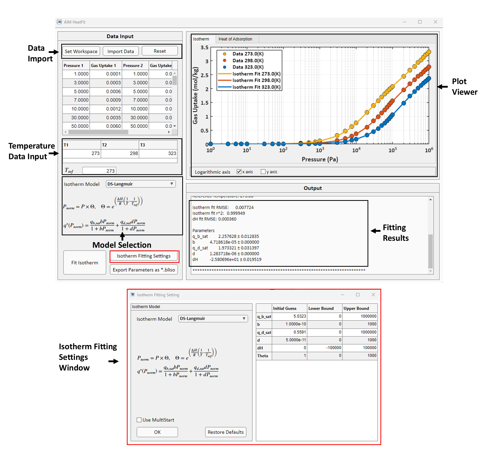

HeatFit#
HeatFit is the module for isotherm model fitting to multi-temperature isotherm data and isosteric heat of adsorption \(\Delta H_{ads}\) prediction using Clausius-Clapeyron or Virial equations. HeatFit GUI is shown below:
{kind=link}

Watch how to use HeatFit here
In HeatFit, isotherm fitting and prediction of the isosteric heat of adsorption can be carried out using either the Clausius-Clapeyron or Virial equations. Fitting method varies based on the chosen model.
Clausius-Clapeyron Equation#
The Clausius-Clapeyron is a thermodynamic relationship which expresses the relationship between pressure and temperature for phase change processes. For adsorption processes, the Clausius-Clapeyron equation is given as,
where \(R\) is the general gas constant. For Clausius-Clapeyron implementation in HeatFit we assume that the \(\Delta H_{ads}\) is independent of temperature and pressure. The assumption yields the following form:
where \(P_{ref}\), \(T_{ref}\), \(P\), and \(T\) are the adsorption pressure and temperatures for the reference and given states, respectively. Note that both reference and given state correspond to the same adsorption loading \(q\). Let \(f\) be the function representing isotherm model then,
Assuming \(f_{ref}\) be the isotherm model fitted at reference temperature, we have
The value of \(P_{ref}\) can be substituted using the Clausius-Clapeyron equation shown above such that,
The utility of the above equation is that it allows us to predict the loading at different temperatures and pressures using the isotherm model fitted at reference condition. Additionally, if we have pressure-loading data at different temperatures and an isotherm model fitted at the reference conditions we can also fit for \(\Delta H_{ads}\).
HeatFit uses the methodology outlined by Ga et al. [1] for isotherm fitting at reference condition and \(\Delta H_{ads}\) prediction. The method involves the following steps:
Step 1: Isotherm fitting at reference temperature
Step 2: Fitting for \(\Theta\) parameter
Step 3: Fitting for isosteric heat of adsorption \(\Delta H_{ads}\)
In all three steps, regression is performed using MATLAB’s built-in lsqnonlin solver. The user can control the regression process using different sets of values for initial guesses, lower and upper bounds.
Step 1: Isotherm Fitting at Reference Temperature#
Like IsoFit, the isotherm fitting at reference temperature is performed for the chosen isotherm model using non-linear regression. Currently, HeatFit supports the following isotherm models:
Isotherm Models |
Isotherm Expression |
Parameters |
|---|---|---|
Langmuir |
\(q = \frac{q_{sat} b P}{1 + b P}\) |
\(q_{sat},\ b\) |
Dual-site Langmuir |
\(q = \frac{q_{sat,1} b_{1} P}{1 + b_{1} P} + \frac{q_{sat,2} b_{2} P}{1 + b_{2} P}\) |
\(q_{sat,1},\ b_{1},\ q_{sat,2},\ b_{2}\) |
Langmuir-Freundlich |
\(q = \frac{q_{sat} b P^{n}}{1 + b P^{n}}\) |
\(q_{sat},\ b,\ n\) |
Dual-site Langmuir-Freundlich |
\(q = \frac{q_{sat, 1} b P^{n_{1}}}{1 + b_{1} P^{n_{1}}} + \frac{q_{sat,2} b_{2} P^{n_{2}}}{1 + b_{2} P^{n_{2}}}\) |
\(q_{sat,1},\ b_{1},\ n_{1},\ q_{sat,2},\ b_{2},\ n_{2}\) |
Quadratic |
\(q = q_{sat}\left(\frac{b P + c P^{2}}{1 + b P + c P^{2}}\right)\) |
\(q_{sat},\ b,\ c\) |
Temkin |
\(q = q_{sat}\left(\frac{b P}{1 + b P}\right) + q_{sat}\theta\left(\frac{b P}{1 + b P}\right)\left(\frac{b P}{1 + b P}-1\right)\) |
\(q_{sat},\ b,\ \theta\) |
BET |
\(q = \frac{q_{sat} b P}{(1 - c P)(1 - c P + b P)}\) |
\(q_{sat},\ b,\ c\) |
Sips |
\(q = \frac{q_{sat} (b P)^{1/n}}{1 + (b P)^{1/n}}\) |
\(q_{sat},\ b,\ n\) |
Toth |
\(q = \frac{q_{sat} b P}{\left(1 + (b P)^n\right)^{1/n}}\) |
\(q_{sat},\ b,\ n\) |
The objective of the non-linear regression is to minimize the \(SSE\) function given as,
where \(N\) and \(q_{i,exp}^{*}\) represents the total number of data points and the experimental gas uptake for the given data point \(i\), respectively. \(f_{ref}(P_{i}; \{a_{k}\}_{1}^{M})\) is the isotherm model corresponding to reference conditions. where, \(P_{i}\) is the pressure value for the given data point \(i\), \(a_{k}\) is the set of parameters and \(M\) is the total number of parameters for the given isotherm model.
In HeatFit the user can control the regression process by specifying custom initial guesses, as well as lower and upper bounds. Additionally, HeatFit offers a multistart option, which generates 1000 random initial guess within the specified bounds. The fitting process is then performed sequentially for each initial guess and the best fitting result is selected. The multistart approach is useful for fitting problems with multiple parameter solutions. In such cases, fitting using multistart option can identify the global minimum corresponding to the best parameter estimates. The multistart option is available for all isotherm models except Auto mode. In Auto mode, HeatFit performs isotherm fitting using all the available isotherm models and then selects the best model. Using multistart option for Auto mode can be computationally expensive, leading to excessive running times.
Root mean square error \((RMSE)\) is used in the program to evaluate the goodness of fit.
If the user chooses the Auto mode, HeatFit reports the best isotherm model with the lowest RMSE values. If two or more models have same value of SSE, then HeatFit will choose the model with a smaller number of parameters because of lower value of RMSE for \(\Delta H_{ads}\) predcition.
HeatFit also reports coefficient of determination, \(r^{2}\), value defined as:
where \(\overline{q_{i,exp}}\) is the mean value of experimental gas uptakes.
Step 2: Fitting for \(\Theta\) Parameter#
Second step involves using the isotherm model and the parameters obtained from fitting at reference temperature to get a set of parameters \(\Theta\), which is defined as,
where \(Z\) is the total number of temperature values used in the fitting process. Every \(θ_{j}\) value in the \(\Theta\) vector corresponds to temperature value \(T_{j}\). Then the program uses non-linear regression to fit for each \(θ_{j}\) value with the objective function defined as follows,
where \(q_{j, exp}^{*}\) is the experimental gas uptake at temperature \(T_{j}\) while \(g(P; \theta_{j})\) can be expressed as,
where \(f_{ref}\) and \(a_{k,ref}\) represent the isotherm function and isotherm function parameters obtained in step 1 at reference conditions, respectively.
Step 3: Fitting for \(\Delta H_{ads}\)#
Next, the correlation between \(θ_{j}\) and \(T_{j}\) is used to fit for \(\Delta H_{ads}\). The correlation is given by the Clausius-Clapeyron equation as:
The program uses non-linear regression to fit for \(\Delta H_{ads}\) value while minimizing the objective function defined as:
HeatFit also reports RMSE value for \(\Delta H_{ads}\) fitting, which is given as,
Virial Equation#
The Virial equation is given as,
where \(a_{i}\) and \(b_{j}\) are the Virial fitting parameters also known as Virial coefficients. \(m\) and \(n\) refers to the number of Virial parameters \(a_{i}\) and \(b_{j}\), respectively. In contrast with the isotherm models discussed earlier, Virial equation expresses the pressure as a function of adsorption loading \(q^{*}\) and temperature \(T\). Moreover, the same set of Virial parameters \(a_{i}\) and \(b_{j}\) are simultaneously used to describe the isotherm data at different temperatures. The isosteric heat of adsorption \(Q_{st}(q^{*})\) is a function of adsorption loading given as,
The isosteric heat of adsorption for the infinite dilution \(Q_{st}^{0}\) (i.e. for very low adsorption loading) is expressed as,
where \(a_{0}\) is the first Virial coefficient. Note the relationship between \(Q_{st}\) and \(\Delta H_{ads}\) is,
Hence, unlike Clausius-Clapeyron approach, the \(\Delta H_{ads}\) can be directly obtained after fitting the Virial equation to the isotherm data.
Virial Equation Fitting#
In the case of Virial equation, HeatFit uses non-linear regression by minimizing the \((SSE)\) function:
where \(N\) is the total number of data points, \(P_{i,exp}\), \(q_{i,exp}^{*}\), and \(T_{i}\) are the experimental pressure, experimental adsorption loading, and temperature values for the given data point \(i\), respectively. \(f\) is the Virial equation; \(a_{k}\), \(b_{k}\) refers to the \(k^{th}\) Virial coefficient, \(m\) and \(n\) are the total number of Virial coefficient \(a\) and \(b\), respectively.
This form of \(SSE\) is used because the Virial equation expresses the natural logarithm of adsorption pressure as a function of adsorption uptake and temperature.
HeatFit also reports the \((RMSE)\) and \(r^{2}\) values as a measure of the goodness of fit.
where \(M\) is the combined total number of Virial coefficients \(a\) and \(b\) and \(\overline{P_{i,exp}}\) is the mean value of experimental pressure.
Note
Fitting multi-temperature isotherm data using Virial equation can be challenging as the same set of Virial parameters \(a_{i}\) and \(b_{j}\) are simultaneously used to describe the isotherm data. Hence, it is important to use as few parameters as possible. The GUI features of HeatFit enable users to quickly try different numbers and combinations of Virial parameters. We advise the user to start with a few parameters, gradually increasing the number of parameters while also keeping the check on standard errors and RMSE values, until no significant improvement in RMSE is observed and the standard errors are also reasonable. Please note that parameter values with high standard error indicate overfitting and are unreliable.
Footnotes